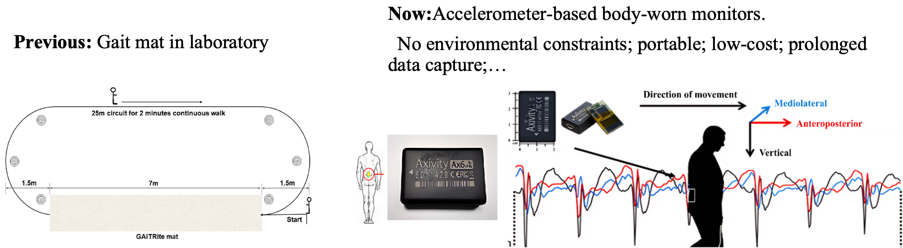
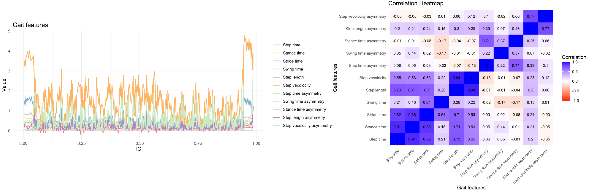
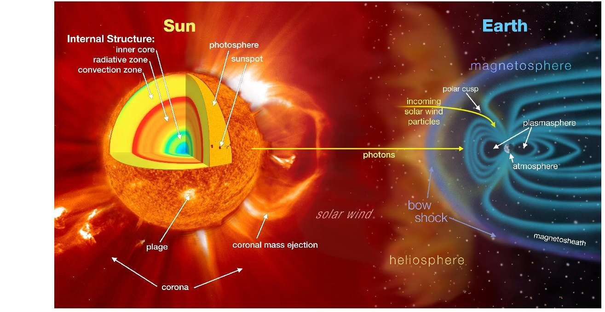
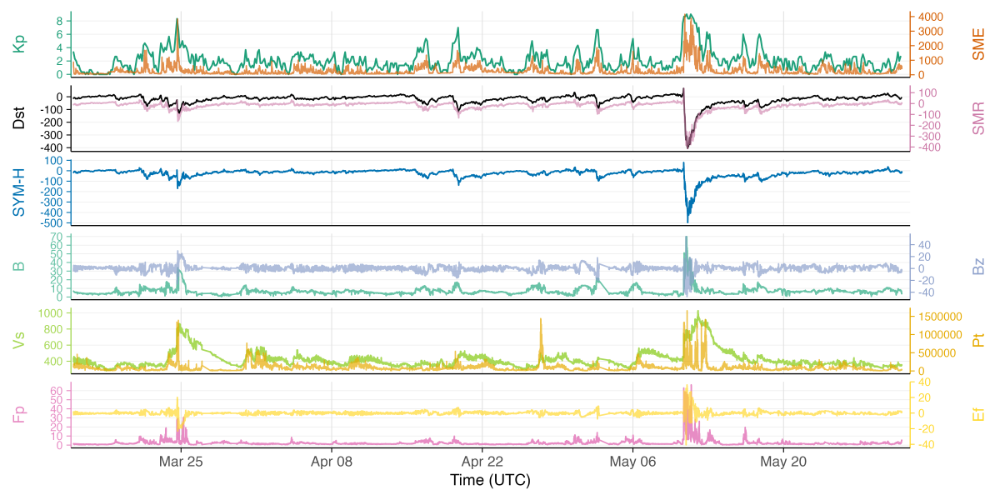

ResearchI study multimodal temporal data from a statistical point of view. Solar observations and wearable accelerometry come from different instruments, but they share a common form: several signals recorded together, often irregularly, with dependence across time, across variables, and, for the Sun–Earth system, across space. The scientific targets — solar energetic particle events, proton flux, geomagnetic activity, gait trajectories, and abnormal symptoms — are defined on these joint signals. Data sources and structureWearable accelerometryA laboratory gait mat records a short walk on a fixed path. Free-living studies use a waist-worn tri-axial accelerometer, which follows mediolateral, anteroposterior, and vertical acceleration while the person moves through ordinary surroundings. One participant can produce several gigabytes of signal, and subject, environment, and activity are mixed into the same record.  From a laboratory gait mat to a body-worn accelerometer. The three colored traces are the mediolateral, anteroposterior, and vertical components of the recorded acceleration. From the raw acceleration I extract gait features — pace, rhythm, variability, asymmetry, and postural control — together with the center-of-mass path in each gait cycle. The result is a multivariate functional series. Features that describe the same step move together, so the covariance belongs to the data structure.  Gait features along a cycle, and the correlation among them. Strong correlation is typical. Step time, stance time, and swing time, for example, describe the same cycle and move together. Solar and near-Earth measurementsSpace-weather series come from several instruments at once. Active-region summaries (SHARP and SMHARP), flares, coronal mass ejections, proton flux, and soft X-ray flux describe the Sun. Geomagnetic indices (Kp, Dst, SYM-H, SME, SMR) and near-Earth solar-wind measurements (magnetic field, Bz, speed, dynamic pressure, and electric field) describe the response at Earth. These series differ in sampling rate, units, and dynamic range, and storms appear as rare, simultaneous bursts.  Sun–Earth interactions that shape the measurements used for space-weather forecasting. Illustration from NASA Scientific Visualization Studio.  Joint pattern of geomagnetic indices and near-Earth solar-wind measurements over the same interval. The series share storm-time bursts and differ in scale and resolution. Statistical questionsAcross both areas, the work asks how these signals should be represented and how their dependence should be described.
Research directionsThese questions point to three directions.
|